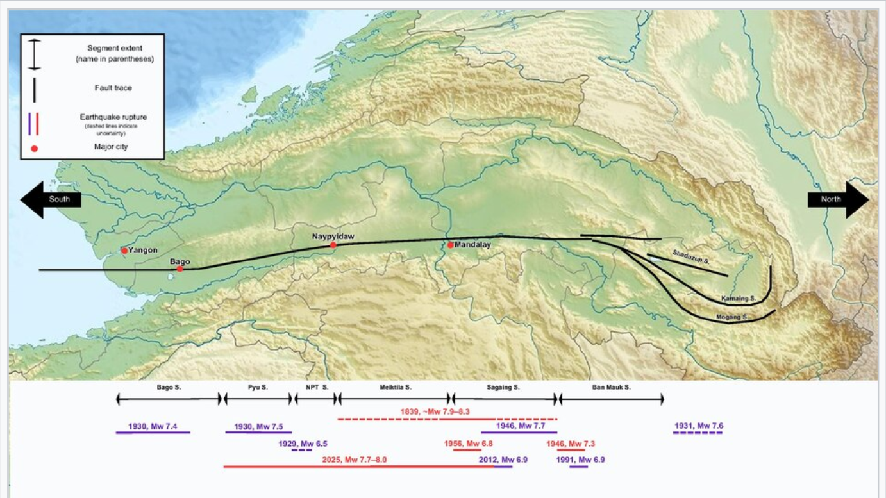
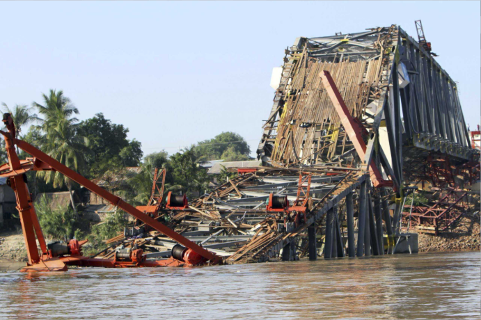

Readiness Checklist
Household Preparation
Tick the items you have completed.
Emergency Contact Plan
Add an emergency contact
For example, a family member or someone trusted.
Essential Documents

Passports
Provides proof of identity and citizenship, especially when travelling or relocating.

National ID Card
Provides proof of identity and may be needed when accessing government services.

Birth Certificates
Help verify the identities, ages, and family relationships of household members.

Property Ownership
Documents to ownership or rights to your home and land if they are damaged or destroyed.
Past History
Mandalay & Sagaing Earthquakes
Magnitude 7.7-7.9
Event Overview & Impact
On March 28, 2025, a powerful 7.7–7.9 magnitude earthquake struck near Mandalay along the Sagaing Fault, causing extreme shaking across central Myanmar and reaching as far as Thailand, China, and Vietnam. It was Myanmar's strongest earthquake since 1912 and its second deadliest in modern history.
The extreme shaking claimed over 5,300 lives, injured more than 11,400 people, and left hundreds of thousands displaced as homes, schools, hospitals, religious buildings, and water networks collapsed across central Myanmar. Because ongoing conflict and damaged roads slowed relief efforts, recovery was especially difficult, while seismic waves even traveled 1,000 km to Bangkok, Thailand, where soft clay soil amplified the shaking and collapsed a high-rise construction site.
Myanmar sits on four interacting tectonic plates, with the 1,400 km Sagaing Fault running directly through major cities like Mandalay, Naypyidaw, and Yangon. Because the fault's central segments had built up decades of stress, the rupture released massive horizontal ground motion.
What should've been prepared
Seismic Retrofitting Reinforcing older masonry buildings, religious halls, and high-rises especially in soft-soil basins and along known Sagaing Fault segments.
Public Gathering Drills Establishing rapid "Drop, Cover, and Hold On" evacuation protocols and clear exits for crowded spaces like mosques, monasteries, and schools.
Decentralized Emergency Kits Keeping offline communication tools, first-aid supplies, and clean water accessible locally in case conflict or damaged roads delay outside rescue teams.
Sagaing Fault

News Report

Chauk Earthquake
Magnitude 6.8 , Occurred at an intermediate depth near Chauk, Magway Region, damaging several historic pagodas.
Event Overview & Impact
On August 24, 2016, a 6.8 magnitude earthquake struck near Chauk in the Magway Region, shaking central Myanmar and surrounding countries. While its deep focus reduced widespread surface collapse, it severely damaged hundreds of historic monuments in nearby Bagan.
The tremor claimed 4 lives, injured dozens, and damaged nearly 400 ancient brick pagodas and temples in the Bagan archaeological zone, including famous landmarks like Sulamani and Htilominlo.
Unlike shallow Sagaing Fault quakes, this was an intermediate-depth intraslab earthquake occurring roughly 84 km beneath the surface inside the subducting Indian tectonic plate.
What should've been prepared
Heritage Reinforcement Strengthening unreinforced ancient brick spires and masonry structures against lateral shaking.
Visitor Evacuation Plans Establishing clear safety zones and rapid evacuation routes for tourists and monks inside crowded temple complexes.
Emergency Stabilization Kits Pre-positioning tarps, timber bracing, and conservation teams to protect damaged structures from monsoon rain.
Damaged Sulamani Temple by the quake
News Report
Shwebo Earthquake
Magnitude 6.8 , Struck near Shwebo in Sagaing Region, resulting in 26 deaths and damaging local infrastructure.
Event Overview & Impact
On November 11, 2012, a 6.8 magnitude earthquake hit near Shwebo in the Sagaing Region, heavily shaking northern and central Myanmar. The shallow rupture caused severe localized destruction across towns along the Irrawaddy River.
The earthquake resulted in 26 deaths, over 230 injuries, and destroyed hundreds of homes, schools, monasteries, and a major bridge under construction across the Irrawaddy River.
It was caused by a shallow strike-slip rupture along the northern-central segment of the active Sagaing Fault, where the Burma and Sunda plates grind past each other.
What should've been prepared
Bridge & Infrastructure Standards Enforcing strict seismic design codes for river crossings, schools, and public buildings near the Sagaing Fault.
Rural First-Aid Readiness Equipping village clinics and local responders with trauma kits and search-and-rescue tools.
Safe Home Construction Anchoring roofs and reinforcing masonry walls in towns situated directly along the fault trace.
Bridge collapse

News Report
Tachilek Earthquake
Magnitude 6.8 , Struck eastern Shan State near the Thai border, causing 75 deaths and considerable structural damage.
Event Overview & Impact
On March 24, 2011, a 6.8 magnitude earthquake struck eastern Shan State near Tachilek and the Thai border, causing intense shaking across the Golden Triangle region. Shallow ground motion flattened entire villages in the mountainous terrain.
The quake killed 75 people (including one in Thailand), injured over 125, and destroyed thousands of homes, government offices, and monasteries across Tarlay and Tachilek, leaving over 18,000 people homeless.
The tremor occurred along the Nam Ma Fault, an active left-lateral strike-slip fault system running through eastern Shan State near the Myanmar–Thailand–Laos border.
What should've been prepared
Slope & Landslide Safety Avoiding heavy masonry construction on steep mountain slopes prone to earthquake-triggered landslides.
Cross-Border Coordination Establishing rapid cross-border emergency communication and medical aid channels with neighboring Thailand.
Emergency Shelter Stockpiles Storing tents, blankets, and clean water in remote highland townships where road access is easily cut off.
Bagan Earthquake
Magnitude 6.8 , Damaged many of the ancient pagodas in the archaeological zone of Bagan.
Event Overview & Impact
On July 8, 1975, a 6.8 magnitude earthquake struck central Myanmar near Bagan, causing severe damage to the country's most prized archaeological zone. The shaking was felt across much of central and western Myanmar.
While human casualties were relatively low (2 deaths), the earthquake damaged or destroyed roughly half of Bagan's major ancient pagodas and temples, collapsing spires and outer brickwork across the plain.
The quake was an intermediate-depth intraslab shock (~120 km deep) generated within the remnants of the subducted Indian plate beneath central Myanmar.
What should've been prepared
Structural Documentation Avoiding heavy masonry construction on steep mountain slopes prone to earthquake-triggered landslides.
Seismic Monitoring Establishing rapid cross-border emergency communication and medical aid channels with neighboring Thailand.
Perimeter Safety Zones Storing tents, blankets, and clean water in remote highland townships where road access is easily cut off.
Sagaing Earthquakes
Magnitude 7.0, Caused significant damage along the central fault line.
Event Overview & Impact
On July 16, 1956, a 7.0 magnitude earthquake struck near Sagaing and Mandalay, heavily damaging central Myanmar's cultural heartland. Violent shaking toppled landmarks and disrupted daily life across the Irrawaddy valley.
The earthquake killed around 40 to 50 people, injured hundreds, and severely damaged the famous Mingun Pagoda, Sagaing Bridge, monasteries, and brick residential buildings in Sagaing and Mandalay.
It ruptured the southern strand of the Sagaing segment of the Sagaing Fault, releasing decades of accumulated tectonic stress right beside major population centers.
What should've been prepared
Masonry Reinforcement Strengthening unreinforced brick walls and tall spires in densely populated cities like Mandalay and Sagaing.
Lifeline Protection Reinforcing critical transport links like the Ava (Sagaing) Bridge to prevent isolation after a quake.
Community Fire & Rescue Drills Training local residents to shut off cooking fires and safely evacuate narrow streets during strong shaking.
North Mandalay Double Earthquakes
Magnitude 7.3 & 7.7, Twin major shocks hit just north of Mandalay.
Event Overview & Impact
On September 12, 1946, two powerful earthquakes measuring 7.3 and 7.7 struck minutes apart just north of Mandalay, causing widespread destruction across northern and central Myanmar while the country was still recovering from World War II.
The twin shocks flattened towns near the epicenter, cracked the ground along the fault trace, damaged bridges and railways, and destroyed numerous pagodas and brick structures in Mandalay and Sagaing.
The double rupture broke the northern portion of the Sagaing segment of the Sagaing Fault, where one major shock immediately triggered a second, even larger rupture nearby.
What should've been prepared
Aftershock Awareness Educating residents to stay outside damaged buildings after an initial shock in case a second, stronger mainshock strikes.
Flexible Building Materials Using lighter timber-frame designs rather than heavy, brittle brick in high-hazard fault zones.
Decentralized Relief Supplies Keeping food, medicine, and clean water stored locally when war-damaged transport networks are fragile.
Bago & Pyu Earthquakes
Magnitude 7.3 , • The 1930 Bago earthquake was long considered one of the deadliest in the country's modern history, alongside the Pyu earthquake that flattened towns.
Event Overview & Impact
In May and December 1930, two devastating earthquakes (magnitude 7.3–7.5) struck Bago and Pyu along the southern Sagaing Fault, becoming the deadliest seismic disaster in Myanmar's modern history.
The May quake devastated Bago and severely shook Yangon, killing over 550 people , including hundreds at the collapsed Shwemawdaw Pagoda , while the December shock flattened Pyu, wrecked railway lines, and claimed dozens more lives.
These twin disasters ruptured adjacent southern segments of the Sagaing Fault (the Bago and Pyu segments), releasing massive horizontal shear stress through soft alluvial river plains.
What should've been prepared
Soft-Soil Building Codes Designing foundations for soft delta soils in Bago and Yangon, which amplify ground shaking.
Crowd Evacuation Planning Creating wide, unobstructed exits around major pagodas and public markets during festivals.
Railway & Utility Resilience Building flexible rail joints and emergency water reserves to maintain supply lines after fault ruptures.
Pyin Oo Lwin (MayMyo) Earthquake
Magnitude 7.9 , Struck central Myanmar near Pyin U Lwin (Maymyo), causing widespread destruction.
Event Overview & Impact
On May 23, 1912, a massive 7.9 magnitude earthquake struck near Pyin Oo Lwin (Maymyo) in the Shan Plateau, marking the strongest earthquake recorded in Myanmar for over a century.
The extreme shaking caused widespread destruction across Mandalay, Pyin Oo Lwin, and northern Shan State, collapsing brick buildings, triggering landslides, bending railway tracks, and damaging pagodas across the region.
The earthquake occurred along the Kyaukkyan Fault, a major strike-slip fault system running along the western edge of the Shan Plateau parallel to the Sagaing Fault.
What should've been prepared
Plateau Fault Mapping Recognizing that major active faults exist in the Shan hills not just along the central plains.
Landslide-Safe Infrastructure Routing railways and mountain roads away from unstable cliffs prone to seismic rockfalls.
Earthquake-Resistant Masonry Reinforcing colonial-era and public brick structures with steel ties and lighter roofing.
Inwa (Ava) Earthquake
Destroyed key historical and royal sites in Inwa, causing over 400 deaths.
Event Overview & Impact
On March 23, 1839, a catastrophic earthquake estimated around magnitude 8.0 struck the royal capital of Inwa (Ava) and nearby Amarapura, leveling the heart of the Konbaung Kingdom.
The quake killed over 400 people, destroyed royal palace complexes, city walls, and thousands of brick monasteries and pagodas including cracking the massive Mingun Pahtodawgyi and caused riverbanks to liquefy and fissure.
It was caused by a massive surface-rupturing slip along the Meiktila and Sagaing segments of the Sagaing Fault right beneath the Irrawaddy River valley.
What should've been prepared
Liquefaction Zone Planning Avoiding heavy stone and brick construction on loose, water-saturated riverbanks along the Irrawaddy.
Timber Over Heavy Brick Relying on traditional flexible teakwood architecture, which survived far better than rigid brick monuments.
Open-Space Assembly Areas Maintaining clear public courtyards away from tall walls and spires for immediate shelter during tremors.
Arakan Earthquake
Magnitude 7.0+ , Struck the western coast and offshore Rakhine State along the Sunda Megathrust, generating a tsunami.
Event Overview & Impact
On April 2, 1762, a colossal megathrust earthquake (estimated magnitude 8.5–8.8) struck off the Rakhine (Arakan) coast and Chittagong, reshaping the coastline and generating a destructive tsunami in the Bay of Bengal.
The violent shaking and tsunami waves killed hundreds of people, flooded coastal settlements, triggered mud volcanoes and landslides, and permanently uplifted coastal islands and reefs along Rakhine State by several meters.
It occurred along the Sunda Megathrust, where the Indian tectonic plate violently subducts beneath the Burma plate off Myanmar's western coast.
What should've been prepared
Tsunami Early Evacuation Teaching coastal communities to immediately move to high ground whenever strong or long-lasting shaking is felt.
Coastal Buffer Zones Keeping critical villages, schools, and shelters elevated above low-lying tidal floodplains.
Marine & Island Readiness Equipping isolated coastal and island communities with self-sustaining emergency food, water, and communication gear.